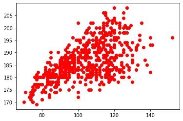
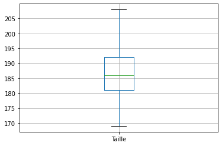

A lire à la première ouverture de ce fichier :
- Ce fichier est en Lecture seule. Vous ne pouvez pas exécutez les cellules ni le modifier.
Pour cette raison :
* Faites-en une copie par Fichier / Enregistrer une copie dans Drive
* Renommer le fichier en Prenom_Nom_03_Pandas_eleves.ipynb
* Partagez (en haut à droite) ce notebook avec le compte nsi.glassus@gmail.com afin que j'ai une visibilité sur votre travail. Faites bien attention à m'accorder un partage avec droit de modification.
* Vous pouvez maintenant éxecuter, modifier les cellules, répondre aux questions...
* Et je peux moi venir en temps réel voir votre travail et écrire dans vos cellules.
Utilisation du module Pandas⚓︎
Le module csv utilisé précédemment se contente de lire les données structurées. Il ne fait aucun effort particulier pour analyser les données. Nous nous en sommes aperçus lorsqu'il a fallu convertir par int() toutes les valeurs numériques, qui étaient interprétées comme des chaînes de caractères.
La bibliothèque pandas est par contre spécialement conçue pour l'analyse des données (data analysis) : elle est donc naturellement bien plus performante.
import pandas as pd #import du module pandas, abrégé classiquement par "pd"
df = pd.read_csv('http://glassus1.free.fr/top14.csv', encoding = 'utf-8')
La variable est nommée classiquement df pour dataframe (que l'on peut traduire par table de données)
type(df)
pandas.core.frame.DataFrame
Premiers renseignements sur les fichiers de données⚓︎
Que contient la variable df?
df
| Equipe | Nom | Poste | Date de naissance | Taille | Poids | |
|---|---|---|---|---|---|---|
| 0 | Agen | Anton PEIKRISHVILI | Pilier | 18/09/1987 | 183 | 122 |
| 1 | Agen | Dave RYAN | Pilier | 21/04/1986 | 183 | 116 |
| 2 | Agen | Giorgi TETRASHVILI | Pilier | 31/08/1993 | 177 | 112 |
| 3 | Agen | Kamaliele TUFELE | Pilier | 11/10/1995 | 182 | 123 |
| 4 | Agen | Malino VANAÏ | Pilier | 04/05/1993 | 183 | 119 |
| ... | ... | ... | ... | ... | ... | ... |
| 590 | Toulouse | Werner KOK | Ailier | 27/01/1993 | 177 | 78 |
| 591 | Toulouse | Yoann HUGET | Ailier | 02/06/1987 | 190 | 97 |
| 592 | Toulouse | Matthis LEBEL | Arrière | 25/03/1999 | 185 | 91 |
| 593 | Toulouse | Maxime MÉDARD | Arrière | 16/11/1986 | 180 | 85 |
| 594 | Toulouse | Thomas RAMOS | Arrière | 23/07/1995 | 178 | 86 |
595 rows × 6 columns
Les données sont présentées dans l'ordre originel du fichier.
Il est possible d'avoir uniquement les premières lignes du fichier avec la commande head() et les dernières du fichier avec la commande tail(). Ces commandes peuvent recevoir en paramètre un nombre entier.
df.head()
| Equipe | Nom | Poste | Date de naissance | Taille | Poids | |
|---|---|---|---|---|---|---|
| 0 | Agen | Anton PEIKRISHVILI | Pilier | 18/09/1987 | 183 | 122 |
| 1 | Agen | Dave RYAN | Pilier | 21/04/1986 | 183 | 116 |
| 2 | Agen | Giorgi TETRASHVILI | Pilier | 31/08/1993 | 177 | 112 |
| 3 | Agen | Kamaliele TUFELE | Pilier | 11/10/1995 | 182 | 123 |
| 4 | Agen | Malino VANAÏ | Pilier | 04/05/1993 | 183 | 119 |
df.tail()
| Equipe | Nom | Poste | Date de naissance | Taille | Poids | |
|---|---|---|---|---|---|---|
| 590 | Toulouse | Werner KOK | Ailier | 27/01/1993 | 177 | 78 |
| 591 | Toulouse | Yoann HUGET | Ailier | 02/06/1987 | 190 | 97 |
| 592 | Toulouse | Matthis LEBEL | Arrière | 25/03/1999 | 185 | 91 |
| 593 | Toulouse | Maxime MÉDARD | Arrière | 16/11/1986 | 180 | 85 |
| 594 | Toulouse | Thomas RAMOS | Arrière | 23/07/1995 | 178 | 86 |
df.head(3)
| Equipe | Nom | Poste | Date de naissance | Taille | Poids | |
|---|---|---|---|---|---|---|
| 0 | Agen | Anton PEIKRISHVILI | Pilier | 18/09/1987 | 183 | 122 |
| 1 | Agen | Dave RYAN | Pilier | 21/04/1986 | 183 | 116 |
| 2 | Agen | Giorgi TETRASHVILI | Pilier | 31/08/1993 | 177 | 112 |
Pour avoir des renseignements globaux sur la structure de notre fichier, on peut utiliser la commande df.info()
df.info()
<class 'pandas.core.frame.DataFrame'>
RangeIndex: 595 entries, 0 to 594
Data columns (total 6 columns):
Equipe 595 non-null object
Nom 595 non-null object
Poste 595 non-null object
Date de naissance 595 non-null object
Taille 595 non-null int64
Poids 595 non-null int64
dtypes: int64(2), object(4)
memory usage: 28.0+ KB
Pour accéder à une fiche particulière de joueur, on peut utiliser la fonction loc() :
df.loc[45]
Equipe Bayonne
Nom Torsten VAN JAARSVELD
Poste Talonneur
Date de naissance 30/06/1987
Taille 175
Poids 106
Name: 45, dtype: object
Extraction de colonnes, création de graphiques⚓︎
Pour créer une liste contenant uniquement les données numériques de la colonne poids, il suffit d'écrire :
poids = df['Poids']
Attention, la variable poids n'est pas une liste qui contiendrait [122,116,112,...] mais un type particulier à pandas, appelé "Series".
print(poids)
0 122
1 116
2 112
3 123
4 119
...
590 78
591 97
592 91
593 85
594 86
Name: Poids, Length: 595, dtype: int64
type(poids)
pandas.core.series.Series
On peut néanmoins s'en servir comme d'une liste classique.
poids[0]
122
On voit donc que les données sont automatiquement traitées comme des nombres. Pas besoin de conversion comme avec le module csv !
Pour tracer notre nuage de points poids-taille, le code sera donc simplement :
%matplotlib inline
import matplotlib.pyplot as plt
X = df['Poids']
Y = df['Taille']
plt.plot(X,Y,'ro') # r pour red, o pour un cercle. voir https://matplotlib.org/api/markers_api.html
plt.show()

L'interprétation numérique permet à pandas d'analyser automatiquement les données, avec notamment la fonction describe().
df['Taille'].describe()
count 595.000000
mean 186.559664
std 7.572615
min 169.000000
25% 181.000000
50% 186.000000
75% 192.000000
max 208.000000
Name: Taille, dtype: float64
On voit donc que les indicateurs statistiques sont proposés automatiquent.
D'ailleurs, on peut très facilement tracer des boites à moustaches avec boxplot().
df.boxplot("Taille")
<matplotlib.axes._subplots.AxesSubplot at 0x7f28dd7de320>

Pour les données non-numériques, la commande describe() n'est que peu d'utilité. Elle renseigne toutefois la valeur la plus fréquente (en statistiques, le mode ou valeur modale)
df['Poste'].describe().top
'3ème ligne'
Pour connaître par exemple la date de naissance la plus fréquente chez les joueurs du top14, on utilisera simplement :
df['Date de naissance'].describe().top
'07/08/1990'
Qui sont les joueurs nés à cette date ?
print(df['Nom'][df['Date de naissance'] == '23/04/1993'])
157 Rory SCHOLES
382 Laurent PANIS
567 Alban PLACINES
Name: Nom, dtype: object
Beaucoup plus de renseignements sont donnés par la commande value_counts().
df['Taille'].value_counts()
180 52
183 40
188 35
181 31
185 31
182 29
184 25
187 25
190 25
193 24
186 24
189 21
178 20
177 18
192 17
198 17
195 16
191 16
196 15
194 14
200 12
174 9
175 9
179 9
202 9
176 8
199 6
197 6
201 5
203 4
172 4
204 3
170 3
206 3
171 3
173 3
208 2
205 1
169 1
Name: Taille, dtype: int64
Filtres et recherches⚓︎
Comment créer une dataframe ne contenant que les joueurs de l'UBB ?
L'idée syntaxique est d'écrire à l'intérieur de df[] le test qui permettra le filtrage.
UBB = df[df['Equipe'] == 'Bordeaux']
UBB
| Equipe | Nom | Poste | Date de naissance | Taille | Poids | |
|---|---|---|---|---|---|---|
| 80 | Bordeaux | Jefferson POIROT | Pilier | 01/11/1992 | 181 | 117 |
| 81 | Bordeaux | Lasha TABIDZE | Pilier | 04/07/1997 | 185 | 117 |
| 82 | Bordeaux | Laurent DELBOULBÈS | Pilier | 17/11/1986 | 181 | 106 |
| 83 | Bordeaux | Lekso KAULASHVILI | Pilier | 27/08/1992 | 187 | 120 |
| 84 | Bordeaux | Peni RAVAI | Pilier | 16/06/1990 | 185 | 119 |
| 85 | Bordeaux | Thierry PAÏVA | Pilier | 19/11/1995 | 184 | 125 |
| 86 | Bordeaux | Vadim COBILAS | Pilier | 30/07/1983 | 180 | 118 |
| 87 | Bordeaux | Adrien PÉLISSIÉ | Talonneur | 07/08/1990 | 181 | 110 |
| 88 | Bordeaux | Clément MAYNADIER | Talonneur | 11/10/1988 | 187 | 100 |
| 89 | Bordeaux | Alexandre FLANQUART | 2ème ligne | 09/10/1989 | 204 | 120 |
| 90 | Bordeaux | Cyril CAZEAUX | 2ème ligne | 10/02/1995 | 198 | 113 |
| 91 | Bordeaux | Jandré MARAIS | 2ème ligne | 14/06/1989 | 198 | 118 |
| 92 | Bordeaux | Kane DOUGLAS | 2ème ligne | 01/06/1989 | 202 | 123 |
| 93 | Bordeaux | Masalosalo TUTAIA | 2ème ligne | 05/06/1984 | 204 | 125 |
| 94 | Bordeaux | Afa AMOSA | 3ème ligne | 11/10/1990 | 187 | 112 |
| 95 | Bordeaux | Alexandre ROUMAT | 3ème ligne | 27/06/1997 | 198 | 104 |
| 96 | Bordeaux | Béka GORGADZE | 3ème ligne | 08/02/1996 | 189 | 105 |
| 97 | Bordeaux | Cameron WOKI | 3ème ligne | 07/11/1998 | 196 | 103 |
| 98 | Bordeaux | Mahamadou DIABY | 3ème ligne | 15/08/1990 | 188 | 105 |
| 99 | Bordeaux | Marco TAULEIGNE | 3ème ligne | 30/08/1993 | 191 | 115 |
| 100 | Bordeaux | Scott HIGGINBOTHAM | 3ème ligne | 05/09/1986 | 195 | 110 |
| 101 | Bordeaux | Maxime LUCU | Mêlée | 12/01/1993 | 177 | 79 |
| 102 | Bordeaux | Yann LESGOURGUES | Mêlée | 17/01/1991 | 174 | 71 |
| 103 | Bordeaux | Ben BOTICA | Ouverture | 07/10/1989 | 178 | 93 |
| 104 | Bordeaux | Lucas MÉRET | Ouverture | 30/01/1995 | 178 | 85 |
| 105 | Bordeaux | Matthieu JALIBERT | Ouverture | 06/11/1998 | 180 | 79 |
| 106 | Bordeaux | Jean-Baptiste DUBIÉ | Centre | 16/07/1989 | 181 | 85 |
| 107 | Bordeaux | Rémi LAMERAT | Centre | 14/01/1990 | 184 | 105 |
| 108 | Bordeaux | Semi RADRADRA | Centre | 13/06/1992 | 188 | 102 |
| 109 | Bordeaux | Seta TAMANIVALU | Centre | 23/07/1992 | 189 | 110 |
| 110 | Bordeaux | Ulupano SEUTENI | Centre | 09/12/1993 | 185 | 95 |
| 111 | Bordeaux | Blair CONNOR | Ailier | 29/09/1988 | 183 | 82 |
| 112 | Bordeaux | Nicolas PLAZY | Ailier | 17/05/1994 | 188 | 85 |
| 113 | Bordeaux | Santiago CORDERO | Ailier | 06/12/1993 | 177 | 83 |
| 114 | Bordeaux | Geoffrey CROS | Arrière | 08/03/1997 | 185 | 85 |
| 115 | Bordeaux | Nans DUCUING | Arrière | 06/11/1991 | 181 | 90 |
| 116 | Bordeaux | Romain BUROS | Arrière | 31/07/1997 | 187 | 91 |
Exercice 1⚓︎
Créer une dataframe gros qui contient les joueurs de plus de 135 kg.
gros = df[df['Poids'] > 135] ; gros
| Equipe | Nom | Poste | Date de naissance | Taille | Poids | |
|---|---|---|---|---|---|---|
| 48 | Bayonne | Edwin MAKA | 2ème ligne | 25/01/1993 | 196 | 140 |
| 167 | Castres | Tapu FALATEA | Pilier | 12/12/1988 | 187 | 137 |
| 253 | La Rochelle | Uini ATONIO | Pilier | 26/03/1990 | 196 | 152 |
| 324 | Montpellier | Antoine GUILLAMON | Pilier | 04/06/1991 | 192 | 136 |
| 373 | Paris | Christopher VAOTOA | Pilier | 16/11/1996 | 185 | 138 |
| 425 | Pau | Malik HAMADACHE | Pilier | 17/10/1988 | 193 | 141 |
| 465 | Racing92 | Ali OZ | Pilier | 28/05/1995 | 193 | 140 |
| 466 | Racing92 | Ben TAMEIFUNA | Pilier | 30/08/1991 | 182 | 140 |
Exercice 2⚓︎
Créer une dataframe grand_gros qui contient les joueurs de plus de 2m et plus de 120 kg.
grand_gros = df[(df['Poids'] > 120) & (df['Taille'] > 200)]
grand_gros
| Equipe | Nom | Poste | Date de naissance | Taille | Poids | |
|---|---|---|---|---|---|---|
| 0 | Agen | Anton PEIKRISHVILI | Pilier | 18/09/1987 | 183 | 122 |
| 3 | Agen | Kamaliele TUFELE | Pilier | 11/10/1995 | 182 | 123 |
| 12 | Agen | Mickaël DE MARCO | 2ème ligne | 22/04/1989 | 195 | 134 |
| 13 | Agen | Pierce PHILLIPS | 2ème ligne | 06/10/1992 | 203 | 119 |
| 35 | Bayonne | Census JOHNSTON | Pilier | 06/05/1981 | 189 | 130 |
| ... | ... | ... | ... | ... | ... | ... |
| 562 | Toulouse | Florian VERHAEGHE | 2ème ligne | 27/04/1997 | 202 | 108 |
| 563 | Toulouse | Iosefa TEKORI | 2ème ligne | 17/12/1983 | 198 | 127 |
| 564 | Toulouse | Richie ARNOLD | 2ème ligne | 01/07/1990 | 208 | 127 |
| 565 | Toulouse | Richie GRAY | 2ème ligne | 24/08/1989 | 206 | 125 |
| 566 | Toulouse | Rory ARNOLD | 2ème ligne | 01/07/1990 | 208 | 120 |
96 rows × 6 columns
Exercice 3⚓︎
Trouver en une seule ligne le joueur le plus léger du Top14.
df['Nom'][df['Poids'] == min(df['Poids'])]
print(df['Nom'][df['Poids'].idxmin])
Dylan HAYES
Tris de données⚓︎
Le tri se fait par la fonction sort_values() :
newdf = df.sort_values(by=['Poids'], ascending = True)
newdf.head(10)
| Equipe | Nom | Poste | Date de naissance | Taille | Poids | |
|---|---|---|---|---|---|---|
| 491 | Racing92 | Teddy IRIBAREN | Mêlée | 25/09/1990 | 170 | 70 |
| 102 | Bordeaux | Yann LESGOURGUES | Mêlée | 17/01/1991 | 174 | 71 |
| 545 | Toulon | Gervais CORDIN | Arrière | 10/12/1998 | 172 | 73 |
| 353 | Montpellier | Benoît PAILLAUGUE | Mêlée | 17/11/1987 | 172 | 74 |
| 143 | Brive | Quentin DELORD | Mêlée | 10/02/1999 | 171 | 74 |
| 578 | Toulouse | Sébastien BÉZY | Mêlée | 22/11/1991 | 174 | 74 |
| 446 | Pau | Clovis LE BAIL | Mêlée | 29/11/1995 | 173 | 74 |
| 64 | Bayonne | Guillaume ROUET | Mêlée | 13/08/1988 | 170 | 75 |
| 364 | Montpellier | Gabriel N'GANDEBE | Ailier | 30/03/1997 | 174 | 75 |
| 283 | La Rochelle | Marc ANDREU | Ailier | 27/12/1985 | 170 | 75 |
Rajout d'une colonne⚓︎
Afin de pouvoir trier les joueurs suivant de nouveaux critères, nous allons rajouter un champ pour chaque joueur.
Prenons un exemple stupide : fabriquons un nouveau champ 'Poids après les vacances' qui contiendra le poids des joueurs augmenté de 8 kg.
Ceci se fera simplement par :
df['Poids après les vacances'] = df['Poids'] + 8
df.head()
| Equipe | Nom | Poste | Date de naissance | Taille | Poids | Poids après les vacances | |
|---|---|---|---|---|---|---|---|
| 0 | Agen | Anton PEIKRISHVILI | Pilier | 18/09/1987 | 183 | 122 | 130 |
| 1 | Agen | Dave RYAN | Pilier | 21/04/1986 | 183 | 116 | 124 |
| 2 | Agen | Giorgi TETRASHVILI | Pilier | 31/08/1993 | 177 | 112 | 120 |
| 3 | Agen | Kamaliele TUFELE | Pilier | 11/10/1995 | 182 | 123 | 131 |
| 4 | Agen | Malino VANAÏ | Pilier | 04/05/1993 | 183 | 119 | 127 |
Pour supprimer cette colonne sans intérêt, faisons :
del df['Poids après les vacances']
df.head()
| Equipe | Nom | Poste | Date de naissance | Taille | Poids | |
|---|---|---|---|---|---|---|
| 0 | Agen | Anton PEIKRISHVILI | Pilier | 18/09/1987 | 183 | 122 |
| 1 | Agen | Dave RYAN | Pilier | 21/04/1986 | 183 | 116 |
| 2 | Agen | Giorgi TETRASHVILI | Pilier | 31/08/1993 | 177 | 112 |
| 3 | Agen | Kamaliele TUFELE | Pilier | 11/10/1995 | 182 | 123 |
| 4 | Agen | Malino VANAÏ | Pilier | 04/05/1993 | 183 | 119 |
Exercice 4⚓︎
- Créer une colonne contenant l'IMC de chaque joueur
- Créer une nouvelle dataframe contenant tous les joueurs du top14 classés par ordre d'IMC croissant.
df['IMC'] = df['Poids'] / (df['Taille']/100)**2
df.head()
| Equipe | Nom | Poste | Date de naissance | Taille | Poids | IMC | |
|---|---|---|---|---|---|---|---|
| 0 | Agen | Anton PEIKRISHVILI | Pilier | 18/09/1987 | 183 | 122 | 36.429872 |
| 1 | Agen | Dave RYAN | Pilier | 21/04/1986 | 183 | 116 | 34.638239 |
| 2 | Agen | Giorgi TETRASHVILI | Pilier | 31/08/1993 | 177 | 112 | 35.749625 |
| 3 | Agen | Kamaliele TUFELE | Pilier | 11/10/1995 | 182 | 123 | 37.133196 |
| 4 | Agen | Malino VANAÏ | Pilier | 04/05/1993 | 183 | 119 | 35.534056 |
imcdf = df.sort_values(by=['IMC'], ascending = True)
imcdf
| Equipe | Nom | Poste | Date de naissance | Taille | Poids | IMC | |
|---|---|---|---|---|---|---|---|
| 102 | Bordeaux | Yann LESGOURGUES | Mêlée | 17/01/1991 | 174 | 71 | 23.450918 |
| 77 | Bayonne | Aymeric LUC | Arrière | 14/10/1997 | 180 | 76 | 23.456790 |
| 66 | Bayonne | Brandon FAJARDO | Ouverture | 25/06/1994 | 181 | 77 | 23.503556 |
| 141 | Brive | David DELARUE | Mêlée | 27/10/1996 | 190 | 85 | 23.545706 |
| 200 | Castres | Martin LAVEAU | Ailier | 10/09/1996 | 182 | 78 | 23.547881 |
| ... | ... | ... | ... | ... | ... | ... | ... |
| 376 | Paris | Paul ALO-EMILE | Pilier | 22/12/1991 | 180 | 128 | 39.506173 |
| 253 | La Rochelle | Uini ATONIO | Pilier | 26/03/1990 | 196 | 152 | 39.566847 |
| 373 | Paris | Christopher VAOTOA | Pilier | 16/11/1996 | 185 | 138 | 40.321402 |
| 511 | Toulon | Sébastien TAOFIFENUA | Pilier | 21/03/1992 | 178 | 130 | 41.030173 |
| 466 | Racing92 | Ben TAMEIFUNA | Pilier | 30/08/1991 | 182 | 140 | 42.265427 |
595 rows × 7 columns